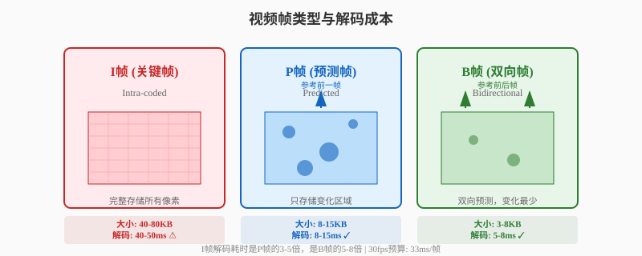
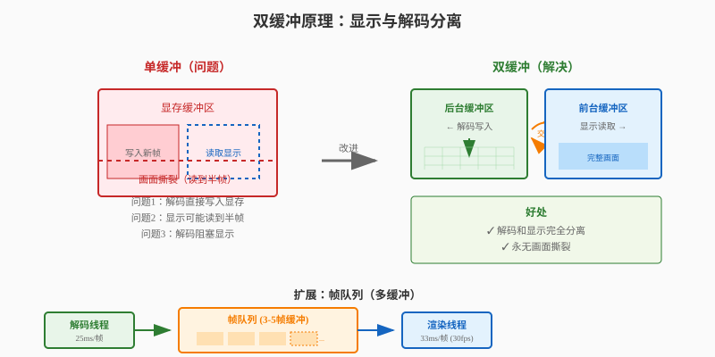
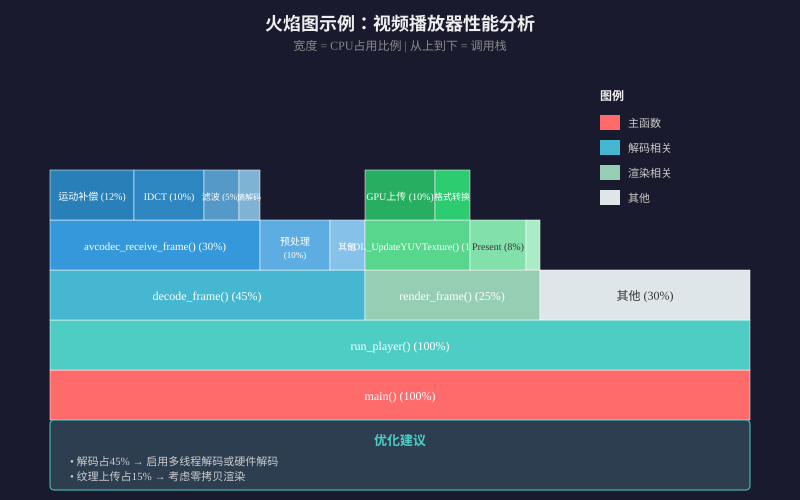

音视频开发实战
第四章：为什么卡顿？性能分析
| 项目 | 内容 |
|---|---|
| 本章目标 | 理解解码耗时，建立性能意识，掌握卡顿分析方法 |
| 难度 | ⭐⭐ 中等 |
| 前置知识 | Ch1-Ch3：视频基础、播放器基础架构、Pipeline设计 |
| 预计时间 | 2-3 小时 |
本章引言：在第三章结束时，我们实现了一个能播放网络视频的播放器。但你是否注意到一个恼人的问题——拖动窗口时画面会冻结？这就是本章要解决的第一个性能问题。
通过本章的学习，你将： - 学会测量代码耗时，建立帧率预算概念 - 理解不同视频帧的解码成本差异 - 发现单线程架构的性能瓶颈 - 掌握基础的性能分析工具（perf、火焰图）
本章与项目的关系：
flowchart LR
subgraph "P1 完整本地播放器"
A["Ch1-3 基础播放器"] --> B["📍 Ch4 性能分析
发现瓶颈"]
B --> C["Ch5-6 异步改造"]
C --> D["P2 网络播放器"]
end
style B fill:#e3f2fd,stroke:#4a90d9,stroke-width:3px
代码演进关系：
flowchart LR
subgraph "P1→P2 演进"
A["Ch3 Pipeline架构"] --> B["📍 Ch4 性能分析"]
B --> C["Ch5-6 多线程改造"]
end
style B fill:#e3f2fd,stroke:#4a90d9,stroke-width:3px
- 当前阶段：性能分析
- 本章产出：发现单线程瓶颈
阅读指南： - 第 1-2 节：观察卡顿现象，测量解码耗时 - 第 3-4 节：理解帧率预算和不同帧类型的解码成本 - 第 5-6 节：发现单线程瓶颈，实验验证 - 第 7-8 节：双缓冲原理和性能分析工具 - 第 9 节：FAQ 常见问题 —
目录
- 卡顿现象：拖动窗口时画面冻结
- 测量解码耗时：std::chrono 实战
- 帧率预算：33ms 法则
- 不同帧的解码成本：I帧 vs P帧 vs B帧
- 单线程瓶颈：所有事情排队做
- 实验：故意制造卡顿
- 双缓冲原理：显示与解码分离
- 性能分析工具：perf 与火焰图
- FAQ 常见问题
- 本章小结
- 下章预告
1. 卡顿现象：拖动窗口时画面冻结
本节概览：先观察问题，再分析原因。我们将复现拖动窗口时的卡顿现象，理解事件循环与解码渲染的关系。
1.1 复现卡顿
使用第三章的播放器代码，播放任意视频，然后快速拖动窗口。你会发现：
正常播放：画面流畅，每秒30帧
↓
拖动窗口：画面完全冻结
↓
停止拖动：画面突然跳到最新位置这不是视频的问题，而是我们程序的问题。
1.2 为什么会卡顿？
让我们回顾第三章的单线程代码结构：
while (av_read_frame(fmt_ctx, packet) >= 0) { // 1. 读取数据
// 处理窗口事件 ↓↓↓
SDL_Event e;
while (SDL_PollEvent(&e)) { // 2. 处理事件
if (e.type == SDL_QUIT) goto cleanup;
}
if (packet->stream_index == video_stream_idx) {
avcodec_send_packet(codec_ctx, packet); // 3. 送入解码器
while (avcodec_receive_frame(codec_ctx, frame) == 0) {
// 同步
int64_t pts_us = frame->pts * av_q2d(video_stream->time_base) * 1000000;
int64_t elapsed = av_gettime() - start_time;
if (pts_us > elapsed) av_usleep(pts_us - elapsed); // 4. 等待
// 渲染 ↓↓↓
SDL_UpdateYUVTexture(texture, nullptr, ...); // 5. 更新纹理
SDL_RenderClear(renderer);
SDL_RenderCopy(renderer, texture, nullptr, nullptr);
SDL_RenderPresent(renderer); // 6. 显示
}
}
}问题分析：
单线程循环：
┌─────────────────────────────────────────────────────────────┐
│ 读取Packet → 解码Frame → 同步等待 → 渲染 → 检查事件 │
└─────────────────────────────────────────────────────────────┘
↑__________________________________↓
循环执行当你拖动窗口时，操作系统会发送窗口移动事件给程序。但程序正在忙于解码和渲染，只有当执行到
SDL_PollEvent 时才能处理这些事件。
时间线分析：
时间轴: 0ms 20ms 40ms 60ms 80ms
│ │ │ │ │
解码帧: ├──I帧─┤
↑这里耗时25ms
事件: 拖动窗口────────→
↑这里产生事件
处理: ↑40ms后才能处理事件！如果解码一帧需要 25ms，那么在这 25ms 内产生的事件都要排队等待。对于窗口事件，这种延迟表现为”卡顿”或”不响应”。
1.3 卡顿的本质
卡顿的本质是：处理事件的代码被阻塞了
理想情况（多线程）：
┌──────────────┐ ┌──────────────┐
│ 解码线程 │ │ 主线程 │
│ 解码+渲染 │ │ 处理事件 │
│ 25ms/帧 │ │ 即时响应 │
└──────────────┘ └──────────────┘
现实情况（单线程）：
┌─────────────────────────────────────┐
│ 主线程 │
│ 解码(25ms) → 渲染(5ms) → 事件(?) │
│ ↑事件在此被阻塞 │
└─────────────────────────────────────┘这引出了本章的核心问题：我们需要测量每一部分的耗时，找到瓶颈。
2. 测量解码耗时：std::chrono 实战
本节概览：学会使用 C++11 的 std::chrono
精确测量代码耗时，这是性能分析的基础技能。
2.1 为什么需要测量
“优化前先测量”——这是性能优化的黄金法则。在没有测量之前，所有的优化都是猜测。
// 不要这样做：凭感觉优化
// "我觉得解码很慢，我要优化它"
// 应该这样做：测量后再优化
// "测量显示解码耗时30ms，目标是16ms，需要优化"2.2 std::chrono 基础
C++11 引入了 <chrono>
库，提供了类型安全的时间测量：
#include <chrono>
// 获取当前时间点
auto start = std::chrono::high_resolution_clock::now();
// ... 执行需要测量的代码 ...
auto end = std::chrono::high_resolution_clock::now();
// 计算耗时（微秒）
auto duration = std::chrono::duration_cast<std::chrono::microseconds>(end - start).count();
// duration 的单位是微秒 (μs)，1ms = 1000μs常用时间单位：
| 单位 | 类 | 换算关系 |
|---|---|---|
| 纳秒 | std::chrono::nanoseconds |
1秒 = 10⁹ 纳秒 |
| 微秒 | std::chrono::microseconds |
1秒 = 10⁶ 微秒 |
| 毫秒 | std::chrono::milliseconds |
1秒 = 10³ 毫秒 |
| 秒 | std::chrono::seconds |
基准单位 |
2.3 测量解码耗时
让我们给第三章的播放器加上耗时测量：
#include <chrono>
#include <deque>
#include <numeric>
// 简单的性能监控器
class DecodeProfiler {
public:
void Start() {
start_time_ = std::chrono::high_resolution_clock::now();
}
void End() {
auto end = std::chrono::high_resolution_clock::now();
auto us = std::chrono::duration_cast<std::chrono::microseconds>(
end - start_time_).count();
// 保存最近30帧的耗时
decode_times_.push_back(us);
if (decode_times_.size() > 30) {
decode_times_.pop_front();
}
}
// 获取平均解码耗时（微秒）
int64_t AverageUs() const {
if (decode_times_.empty()) return 0;
int64_t sum = std::accumulate(decode_times_.begin(), decode_times_.end(), 0LL);
return sum / decode_times_.size();
}
// 获取最大耗时
int64_t MaxUs() const {
if (decode_times_.empty()) return 0;
return *std::max_element(decode_times_.begin(), decode_times_.end());
}
// 打印统计信息
void PrintStats() const {
int64_t avg = AverageUs();
int64_t max = MaxUs();
double fps = 1000000.0 / avg; // 理论最大帧率
printf("[性能] 平均解码: %ldμs (%.1f fps), 最大: %ldμs\n",
avg, fps, max);
}
private:
std::chrono::time_point<std::chrono::high_resolution_clock> start_time_;
std::deque<int64_t> decode_times_;
};在解码循环中使用：
DecodeProfiler profiler;
while (av_read_frame(fmt_ctx, packet) >= 0) {
if (packet->stream_index == video_stream_idx) {
profiler.Start(); // ← 开始计时
avcodec_send_packet(codec_ctx, packet);
while (avcodec_receive_frame(codec_ctx, frame) == 0) {
// 解码完成
}
profiler.End(); // ← 结束计时
// 每30帧打印一次统计
if (decode_count_ % 30 == 0) {
profiler.PrintStats();
}
// 渲染...
}
av_packet_unref(packet);
}2.4 完整测量示例代码
// profiler_player.cpp - 带性能分析的播放器
#include <SDL2/SDL.h>
#include <stdio.h>
#include <chrono>
#include <deque>
#include <numeric>
extern "C" {
#include <libavformat/avformat.h>
#include <libavcodec/avcodec.h>
#include <libavutil/time.h>
}
class PerformanceMonitor {
public:
struct Stats {
int64_t decode_us;
int64_t render_us;
int64_t total_us;
};
void StartDecode() {
decode_start_ = Now();
}
void EndDecode() {
decode_end_ = Now();
}
void StartRender() {
render_start_ = Now();
}
void EndRender() {
render_end_ = Now();
}
void RecordFrame() {
Stats s;
s.decode_us = DurationUs(decode_start_, decode_end_);
s.render_us = DurationUs(render_start_, render_end_);
s.total_us = s.decode_us + s.render_us;
stats_.push_back(s);
if (stats_.size() > 30) stats_.pop_front();
frame_count_++;
if (frame_count_ % 30 == 0) {
PrintStats();
}
}
void PrintStats() const {
if (stats_.empty()) return;
int64_t avg_decode = 0, avg_render = 0, max_total = 0;
for (const auto& s : stats_) {
avg_decode += s.decode_us;
avg_render += s.render_us;
max_total = std::max(max_total, s.total_us);
}
avg_decode /= stats_.size();
avg_render /= stats_.size();
double decode_fps = 1000000.0 / avg_decode;
double total_fps = 1000000.0 / (avg_decode + avg_render);
printf("\n========== 性能统计 (最近%d帧) ==========\n", (int)stats_.size());
printf("解码: %4ld μs (%.1f fps)\n", avg_decode, decode_fps);
printf("渲染: %4ld μs\n", avg_render);
printf("总计: %4ld μs (%.1f fps)\n", avg_decode + avg_render, total_fps);
printf("最大: %4ld μs\n", max_total);
printf("========================================\n\n");
}
private:
using Clock = std::chrono::high_resolution_clock;
using TimePoint = std::chrono::time_point<Clock>;
TimePoint Now() { return Clock::now(); }
int64_t DurationUs(TimePoint start, TimePoint end) {
return std::chrono::duration_cast<std::chrono::microseconds>(end - start).count();
}
TimePoint decode_start_, decode_end_;
TimePoint render_start_, render_end_;
std::deque<Stats> stats_;
int frame_count_ = 0;
};
int main(int argc, char* argv[]) {
if (argc < 2) {
fprintf(stderr, "用法: %s <视频文件>\n", argv[0]);
return 1;
}
// ... 初始化代码（省略，与第三章相同）...
AVFormatContext* fmt_ctx = nullptr;
avformat_open_input(&fmt_ctx, argv[1], nullptr, nullptr);
avformat_find_stream_info(fmt_ctx, nullptr);
int video_stream_idx = av_find_best_stream(fmt_ctx, AVMEDIA_TYPE_VIDEO, -1, -1, nullptr, 0);
AVStream* video_stream = fmt_ctx->streams[video_stream_idx];
const AVCodec* codec = avcodec_find_decoder(video_stream->codecpar->codec_id);
AVCodecContext* codec_ctx = avcodec_alloc_context3(codec);
avcodec_parameters_to_context(codec_ctx, video_stream->codecpar);
avcodec_open2(codec_ctx, codec, nullptr);
SDL_Init(SDL_INIT_VIDEO);
SDL_Window* window = SDL_CreateWindow("Profiler Player",
SDL_WINDOWPOS_CENTERED, SDL_WINDOWPOS_CENTERED,
codec_ctx->width, codec_ctx->height, SDL_WINDOW_SHOWN);
SDL_Renderer* renderer = SDL_CreateRenderer(window, -1,
SDL_RENDERER_ACCELERATED | SDL_RENDERER_PRESENTVSYNC);
SDL_Texture* texture = SDL_CreateTexture(renderer,
SDL_PIXELFORMAT_IYUV, SDL_TEXTUREACCESS_STREAMING,
codec_ctx->width, codec_ctx->height);
AVPacket* packet = av_packet_alloc();
AVFrame* frame = av_frame_alloc();
PerformanceMonitor monitor;
int64_t start_time = av_gettime();
while (av_read_frame(fmt_ctx, packet) >= 0) {
SDL_Event e;
while (SDL_PollEvent(&e)) {
if (e.type == SDL_QUIT) goto cleanup;
}
if (packet->stream_index == video_stream_idx) {
monitor.StartDecode();
avcodec_send_packet(codec_ctx, packet);
while (avcodec_receive_frame(codec_ctx, frame) == 0) {
monitor.EndDecode();
// 同步
int64_t pts_us = frame->pts * av_q2d(video_stream->time_base) * 1000000;
int64_t elapsed = av_gettime() - start_time;
if (pts_us > elapsed) av_usleep(pts_us - elapsed);
// 渲染
monitor.StartRender();
SDL_UpdateYUVTexture(texture, nullptr,
frame->data[0], frame->linesize[0],
frame->data[1], frame->linesize[1],
frame->data[2], frame->linesize[2]);
SDL_RenderClear(renderer);
SDL_RenderCopy(renderer, texture, nullptr, nullptr);
SDL_RenderPresent(renderer);
monitor.EndRender();
monitor.RecordFrame();
}
}
av_packet_unref(packet);
}
cleanup:
// ... 清理代码 ...
av_frame_free(&frame);
av_packet_free(&packet);
avcodec_free_context(&codec_ctx);
avformat_close_input(&fmt_ctx);
SDL_Quit();
return 0;
}2.5 编译运行
# 编译
g++ -std=c++14 -O2 profiler_player.cpp -o profiler_player \
$(pkg-config --cflags --libs libavformat libavcodec libavutil sdl2)
# 运行
./profiler_player test.mp4典型输出：
========== 性能统计 (最近30帧) ==========
解码: 8234 μs (121.5 fps)
渲染: 1567 μs
总计: 9801 μs (102.0 fps)
最大: 15234 μs
========================================这意味着： - 解码平均需要 8.2ms - 渲染平均需要 1.6ms - 处理一帧总共需要 9.8ms - 理论上可以支持 102fps（1000/9.8）
3. 帧率预算：33ms 法则
本节概览：理解帧率与耗时的关系，建立”帧率预算”概念。这是实时系统的核心设计约束。
3.1 帧率与耗时的数学关系
帧率（FPS, Frames Per Second）：每秒显示多少帧
30fps = 每秒30帧 = 每帧 1000/30 ≈ 33.3ms
60fps = 每秒60帧 = 每帧 1000/60 ≈ 16.7ms| 目标帧率 | 每帧时间预算 | 应用场景 |
|---|---|---|
| 24fps | 41.7ms | 电影（最低可接受） |
| 30fps | 33.3ms | 普通视频 |
| 60fps | 16.7ms | 游戏、高帧率视频 |
| 120fps | 8.3ms | 电竞、VR |
3.2 帧率预算分配
假设目标是 30fps（33ms 预算），我们需要把时间分配给各个环节：
33ms 预算分配示例：
┌────────────────────────────────────────────────┐
│ 解码: 15ms ████████████████░░░░░░░░░░░░░░░░░ │
│ 渲染: 5ms █████░░░░░░░░░░░░░░░░░░░░░░░░░░░░ │
│ 同步: 2ms ██░░░░░░░░░░░░░░░░░░░░░░░░░░░░░░░ │
│ 事件: 1ms █░░░░░░░░░░░░░░░░░░░░░░░░░░░░░░░░ │
│ 余量: 10ms ██████████░░░░░░░░░░░░░░░░░░░░░░░ │ ← 应对波动
└────────────────────────────────────────────────┘为什么要留余量？
因为视频帧的解码时间不是恒定的——I帧比P帧慢，P帧比B帧慢。如果没有余量，遇到大I帧时就会卡顿。
3.3 实际测量的重要性
理论预算 vs 实际测量：
理论计算：
- 1080p H.264 软解 30fps 应该没问题
实际测量（不同机器）：
- MacBook Pro M1: 8ms/帧 ✓ 轻松
- 老旧 i5 笔记本: 25ms/帧 ✓ 刚好
- 树莓派 4: 45ms/帧 ✗ 卡顿永远不要假设性能，要测量。
3.4 性能目标检查表
| 目标帧率 | 总预算 | 解码预算 | 渲染预算 | 余量 |
|---|---|---|---|---|
| 30fps | 33ms | <20ms | <5ms | >8ms |
| 60fps | 16ms | <10ms | <3ms | >3ms |
检查你的播放器：
// 在性能统计中加入预算检查
void CheckBudget(int64_t total_us) {
const int64_t BUDGET_30FPS = 33333; // 33.3ms = 33333μs
const int64_t BUDGET_60FPS = 16667; // 16.7ms = 16667μs
if (total_us > BUDGET_30FPS) {
printf("⚠️ 警告：超过30fps预算！(%ldμs > %ldμs)\n", total_us, BUDGET_30FPS);
} else if (total_us > BUDGET_60FPS) {
printf("✓ 满足30fps，但无法满足60fps\n");
} else {
printf("✓ 满足60fps\n");
}
}4. 不同帧的解码成本：I帧 vs P帧 vs B帧
本节概览：理解视频编码中三种帧类型的解码成本差异，这是预测性能波动的基础。
4.1 回顾：三种帧类型
在第一章我们学习了视频压缩原理，其中提到了三种帧类型：

| 类型 | 名称 | 依赖关系 | 典型大小 | 解码成本 |
|---|---|---|---|---|
| I帧 | 关键帧（Intra） | 无依赖 | 40-80 KB | 最高 |
| P帧 | 预测帧（Predicted） | 依赖前一帧 | 8-15 KB | 中等 |
| B帧 | 双向帧（Bidirectional） | 依赖前后帧 | 3-8 KB | 较低 |
4.2 为什么 I帧解码最慢？
I帧（关键帧）： - 包含完整的图像数据 - 使用帧内压缩（DCT变换+量化） - 需要完整解码所有宏块
I帧解码流程：
压缩数据 → 熵解码 → 反量化 → IDCT变换 → 重构图像
↑
每个宏块都要走完整流程P帧（预测帧）： - 只存储与参考帧的差异 - 使用运动估计和补偿 - 大部分区域可能”没有变化”
P帧解码流程：
参考帧 → 运动矢量 → 预测图像 → 残差解码 → 重构图像
↑
运动补偿通常很快4.3 测量不同帧的解码耗时
让我们修改代码，分别统计 I/P/B 帧的解码时间：
class FrameTypeProfiler {
public:
void RecordFrame(char pict_type, int64_t decode_us) {
switch (pict_type) {
case 'I': iframe_times_.push_back(decode_us); break;
case 'P': pframe_times_.push_back(decode_us); break;
case 'B': bframe_times_.push_back(decode_us); break;
}
// 保持最近30个样本
if (iframe_times_.size() > 30) iframe_times_.pop_front();
if (pframe_times_.size() > 30) pframe_times_.pop_front();
if (bframe_times_.size() > 30) bframe_times_.pop_front();
}
void PrintStats() const {
printf("\n========== 帧类型解码统计 ==========\n");
printf("I帧: %s\n", FormatStats(iframe_times_).c_str());
printf("P帧: %s\n", FormatStats(pframe_times_).c_str());
printf("B帧: %s\n", FormatStats(bframe_times_).c_str());
printf("====================================\n\n");
}
private:
std::deque<int64_t> iframe_times_;
std::deque<int64_t> pframe_times_;
std::deque<int64_t> bframe_times_;
std::string FormatStats(const std::deque<int64_t>& times) const {
if (times.empty()) return "无数据";
int64_t sum = 0, max_val = 0;
for (auto t : times) {
sum += t;
max_val = std::max(max_val, t);
}
int64_t avg = sum / times.size();
char buf[128];
snprintf(buf, sizeof(buf), "平均%4ldμs, 最大%4ldμs, 样本%d",
avg, max_val, (int)times.size());
return buf;
}
};
// 使用方式
FrameTypeProfiler ft_profiler;
while (avcodec_receive_frame(codec_ctx, frame) == 0) {
auto end = std::chrono::high_resolution_clock::now();
auto decode_us = std::chrono::duration_cast<std::chrono::microseconds>(
end - decode_start).count();
// frame->pict_type 表示帧类型：AV_PICTURE_TYPE_I, AV_PICTURE_TYPE_P, AV_PICTURE_TYPE_B
char type = av_get_picture_type_char((AVPictureType)frame->pict_type);
ft_profiler.RecordFrame(type, decode_us);
if (++frame_count % 90 == 0) { // 每90帧打印一次
ft_profiler.PrintStats();
}
}4.4 典型测量结果
在 1080p H.264 视频上的典型结果：
========== 帧类型解码统计 ==========
I帧: 平均45231μs, 最大52341μs, 样本10 ← 45ms！超过33ms预算
P帧: 平均 8234μs, 最大 9876μs, 样本50
B帧: 平均 5234μs, 最大 6543μs, 样本30
====================================关键发现： - I帧解码需要 45ms，超过了 30fps 的 33ms 预算 - 这意味着播放这个视频时，遇到I帧必然卡顿
4.5 为什么播放器还能工作？
你可能会问：如果I帧解码需要45ms，超过33ms预算，为什么播放器还能播放？
答案：FFmpeg 的解码器默认使用了多线程解码。
// 默认情况下，FFmpeg 可能已经启用了多线程
// 检查实际的解码线程数
printf("解码线程数: %d\n", codec_ctx->thread_count);但我们现在写的是单线程播放器——解码、渲染、事件处理都在一个线程。这就是为什么拖动窗口会卡顿的原因。
5. 单线程瓶颈：所有事情排队做
本节概览：深入分析单线程架构的性能瓶颈，理解为什么需要多线程。
5.1 单线程的执行模型
我们的播放器目前是这样工作的：
单线程执行顺序：
┌─────────────────────────────────────────────────────────┐
│ 读取Packet → 解码Frame → 同步等待 → 渲染 → 处理事件 │
└─────────────────────────────────────────────────────────┘
↑________________________________________________↓
循环执行问题：所有操作串行执行，任何一个环节卡住，其他环节都要等待。
5.2 时间线分析
假设解码一帧需要 25ms，渲染需要 5ms：
时间轴 (ms): 0 10 20 25 30 35 40
│ │ │ │ │ │
解码: └──────┴──────┴──────┘
↑25ms
渲染: └────┘
↑5ms
可处理事件: ↑从这里开始才能处理在这 30ms 内，如果用户拖动窗口，事件无法被处理，表现为卡顿。
5.3 瓶颈叠加效应
更糟的是，瓶颈会叠加：
场景：播放高码率视频 + 拖动窗口
时间: 0 10 20 30 40 50 60 70 80
│ │ │ │ │ │ │ │
解码: └──────┴──────┴──────┘
↑解码慢
渲染: └────┘
↑渲染慢
事件A: ↑产生 ↑处理(延迟30ms)
事件B: ↑产生 ↑处理(延迟40ms)
事件C: ↑产生 ↑处理(延迟50ms)用户的操作得不到即时响应，体验很差。
5.4 单线程 vs 多线程对比
单线程（当前）：
┌─────────────────────────────────────────────┐
│ 主线程 │
│ ┌─────────┐ ┌─────────┐ ┌─────────┐ │
│ │ 解码25ms│→│ 渲染5ms │→│ 事件? │ │
│ └─────────┘ └─────────┘ └─────────┘ │
│ ↑事件在此被阻塞 │
└─────────────────────────────────────────────┘多线程（目标）：
┌─────────────────┐ ┌─────────────────────┐
│ 解码线程 │ │ 主线程 │
│ ┌───────────┐ │ │ ┌─────────────┐ │
│ │ 解码25ms │ │ │ │ 处理事件 │ │
│ │ 解码25ms │ │ │ │ 处理事件 │ │
│ │ 解码25ms │ │ │ │ 渲染5ms │ │
│ └───────────┘ │ │ └─────────────┘ │
│ ↓ │ │ ↑ │
│ 帧队列 │→ │ 从队列取帧渲染 │
└─────────────────┘ └─────────────────────┘
事件处理永不阻塞关键区别： - 单线程：解码阻塞事件处理 - 多线程：事件处理独立于解码
5.5 延迟的量化分析
| 架构 | 事件处理延迟 | 能否接受 |
|---|---|---|
| 单线程 | 等于解码+渲染时间 | ❌ 不可接受 |
| 双缓冲 | 小于一帧时间 | ⚠️ 可接受 |
| 多线程 | 接近即时 | ✓ 良好 |
6. 实验：故意制造卡顿
本节概览：通过故意在解码中加入延迟，观察卡顿现象，验证我们的理论分析。
6.1 实验设计
让我们写一个简单的实验程序，验证”解码耗时会影响事件响应”：
// lag_experiment.cpp - 卡顿实验
#include <SDL2/SDL.h>
#include <chrono>
#include <thread>
// 模拟不同耗时的解码
void SimulateDecode(int ms) {
std::this_thread::sleep_for(std::chrono::milliseconds(ms));
}
int main(int argc, char* argv[]) {
SDL_Init(SDL_INIT_VIDEO);
SDL_Window* window = SDL_CreateWindow("Lag Experiment",
SDL_WINDOWPOS_CENTERED, SDL_WINDOWPOS_CENTERED,
640, 480, SDL_WINDOW_RESIZABLE);
SDL_Renderer* renderer = SDL_CreateRenderer(window, -1, 0);
// 读取命令行参数：模拟解码耗时（毫秒）
int decode_time_ms = 50; // 默认50ms
if (argc > 1) {
decode_time_ms = atoi(argv[1]);
}
printf("模拟解码耗时: %dms\n", decode_time_ms);
printf("尝试拖动窗口，观察流畅度...\n");
bool running = true;
int frame_count = 0;
auto last_event_check = std::chrono::high_resolution_clock::now();
while (running) {
// ===== 模拟解码 =====
auto decode_start = std::chrono::high_resolution_clock::now();
SimulateDecode(decode_time_ms);
auto decode_end = std::chrono::high_resolution_clock::now();
// ===== 模拟渲染 =====
SDL_SetRenderDrawColor(renderer,
(frame_count * 5) % 255, // 变化颜色
100, 100, 255);
SDL_RenderClear(renderer);
SDL_RenderPresent(renderer);
// ===== 处理事件 =====
auto event_start = std::chrono::high_resolution_clock::now();
SDL_Event e;
int events_processed = 0;
while (SDL_PollEvent(&e)) {
events_processed++;
if (e.type == SDL_QUIT) running = false;
if (e.type == SDL_WINDOWEVENT) {
auto latency = std::chrono::duration_cast<std::chrono::milliseconds>(
event_start - last_event_check).count();
if (e.window.event == SDL_WINDOWEVENT_MOVED) {
printf("窗口移动事件，响应延迟: %ld ms\n", latency);
}
}
}
last_event_check = event_start;
auto total_us = std::chrono::duration_cast<std::chrono::microseconds>(
std::chrono::high_resolution_clock::now() - decode_start).count();
if (++frame_count % 30 == 0) {
printf("帧%d: 解码%dms, 处理%d个事件, 总耗时%.1fms, 理论%.1f fps\n",
frame_count, decode_time_ms, events_processed,
total_us / 1000.0, 1000000.0 / total_us);
}
}
SDL_Quit();
return 0;
}6.2 编译运行
# 编译
g++ -std=c++14 lag_experiment.cpp -o lag_experiment $(pkg-config --cflags --libs sdl2)
# 运行不同耗时的版本
./lag_experiment 10 # 模拟10ms解码
./lag_experiment 50 # 模拟50ms解码
./lag_experiment 100 # 模拟100ms解码6.3 预期结果
| 解码耗时 | 事件响应延迟 | 用户体验 |
|---|---|---|
| 10ms | ~10ms | ✓ 流畅，几乎无感知 |
| 50ms | ~50ms | ⚠️ 明显延迟，但能接受 |
| 100ms | ~100ms | ❌ 严重卡顿，无法接受 |
6.4 实验观察要点
运行程序时注意以下几点：
- 窗口拖动流畅度：解码耗时越长，拖动越卡
- 事件响应延迟：打印的延迟数值
- 理论帧率：总耗时决定了最大帧率
这个实验证明了：解码耗时直接决定了事件响应的延迟。
7. 双缓冲原理：显示与解码分离
本节概览：介绍双缓冲技术，理解如何通过缓冲区解耦解码和显示，为后续的多线程架构打下基础。
7.1 什么是双缓冲
双缓冲（Double Buffering）是一种经典的计算机图形技术：

传统单缓冲：
┌─────────────┐
│ 显示内存 │ ← 解码直接写入，屏幕直接读取
└─────────────┘
↑
可能产生撕裂（解码写到一半被显示）
双缓冲：
┌─────────────┐ ┌─────────────┐
│ 前台缓冲区 │ │ 后台缓冲区 │
│ (显示中) │ │ (解码中) │
└─────────────┘ └─────────────┘
↑ ↑
显示 解码
当后台缓冲解码完成，交换两个缓冲区7.2 双缓冲解决什么问题？
问题1：画面撕裂
单缓冲场景：
时间: 显示扫描 解码写入
↓ ↓
████████████ ← 旧画面
██████------ ← 解码写到一半，显示读到新数据
------------
结果：屏幕上同时出现新旧两帧的部分内容问题2：解码阻塞显示
单缓冲：解码耗时直接决定显示帧率
双缓冲：
┌─────────────┐ ┌─────────────┐
│ 解码线程 │ ──→ │ 帧队列 │ ← 缓冲多帧
│ (25ms/帧) │ │ (3-5帧) │
└─────────────┘ └──────┬──────┘
↓
┌─────────────┐
│ 显示线程 │ ← 以固定帧率显示
│ (33ms/帧) │
└─────────────┘7.3 双缓冲在视频播放中的应用
实际视频播放中，双缓冲扩展为帧队列：
// 简化的帧队列实现
class FrameQueue {
public:
static constexpr size_t MAX_SIZE = 5; // 最多缓冲5帧
void Push(AVFrame* frame) {
std::unique_lock<std::mutex> lock(mutex_);
// 队列满时等待
not_full_.wait(lock, [this] { return queue_.size() < MAX_SIZE; });
queue_.push(frame);
not_empty_.notify_one();
}
AVFrame* Pop() {
std::unique_lock<std::mutex> lock(mutex_);
// 队列空时等待
not_empty_.wait(lock, [this] { return !queue_.empty(); });
AVFrame* frame = queue_.front();
queue_.pop();
not_full_.notify_one();
return frame;
}
private:
std::queue<AVFrame*> queue_;
std::mutex mutex_;
std::condition_variable not_empty_;
std::condition_variable not_full_;
};7.4 缓冲大小的权衡
| 缓冲区大小 | 延迟 | 流畅度 | 内存占用 |
|---|---|---|---|
| 1帧 | 最低 | 差（容易欠载） | 低 |
| 3帧 | 低 | 好 | 中等 |
| 5帧 | 中等 | 很好 | 较高 |
| 10帧 | 高 | 极好 | 高 |
直播场景：通常使用 3-5 帧缓冲，平衡延迟和流畅度
7.5 欠载与过载
欠载（Underflow）：解码跟不上显示速度
队列: [帧1][帧2] → 空 → 显示线程等待
↑
画面暂停，等待解码过载（Overflow）：队列满了，解码线程等待
队列: [帧1][帧2][帧3][帧4][帧5] 满
↑
解码线程等待这两种情况都会影响播放质量，需要合理设置缓冲区大小和丢帧策略。
8. 性能分析工具：perf 与火焰图
本节概览：学习使用 Linux 的 perf 工具和火焰图，可视化地定位性能瓶颈。
8.1 perf 工具简介
perf 是 Linux 内核提供的性能分析工具，可以统计函数的 CPU
占用：
# 基本用法：记录程序运行时的性能数据
perf record -g ./player test.mp4
# 查看统计结果
perf report8.2 生成火焰图
火焰图（Flame Graph）是性能分析的可视化工具，可以直观显示调用栈的 CPU 占用：
# 1. 安装火焰图工具
git clone https://github.com/brendangregg/FlameGraph.git
# 2. 记录性能数据（带调用栈）
perf record -g --call-graph=dwarf ./player test.mp4
# 按 Ctrl+C 停止录制
# 3. 生成火焰图
perf script | ./FlameGraph/stackcollapse-perf.pl | \
./FlameGraph/flamegraph.pl > flamegraph.svg
# 4. 浏览器查看
firefox flamegraph.svg8.3 解读火焰图
火焰图的阅读方法：

火焰图结构：
┌─────────────────────────────────────────────────┐
│ main() │ ← 底部是调用者
│ └── run_player() │
│ ├── decode_frame() ████████████ │ ← 宽度 = CPU占比
│ │ ├── avcodec_receive_frame() ████████ │
│ │ └── idct_transform() ██ │
│ ├── render_frame() ████ │
│ └── handle_events() █ │ ← 顶部是被调用者
└─────────────────────────────────────────────────┘
宽度越宽 = 占用CPU越多 = 优化的潜在收益越大8.4 典型播放器的火焰图分析
一个典型视频播放器的火焰图可能长这样：
解码层 (40-50%): avcodec_receive_frame 及相关函数
├── 运动补偿 (15%)
├── IDCT 变换 (10%)
└── 环路滤波 (8%)
渲染层 (20-30%): SDL_UpdateYUVTexture, SDL_RenderPresent
├── 纹理上传 (15%)
└── GPU 等待 VSync (10%)
系统层 (10-20%): 驱动、内存拷贝、文件 IO优化决策： - 解码占比 > 50% → 启用多线程或硬件解码 - 纹理上传占比 > 20% → 使用零拷贝或硬件解码 - VSync 等待占比高 → 正常，无需优化
8.5 其他性能分析工具
| 工具 | 用途 | 命令示例 |
|---|---|---|
| perf | CPU 采样 | perf record -g ./player |
| top/htop | 实时CPU/内存 | top -p $(pgrep player) |
| valgrind | 内存分析 | valgrind --tool=callgrind ./player |
| strace | 系统调用跟踪 | strace -c ./player |
实时查看CPU占用：
# 查看播放器进程的CPU占用
top -p $(pgrep player)
# 或
htop -p $(pgrep player)9. FAQ 常见问题
Q1：为什么拖动窗口会导致画面冻结？
A：这是单线程架构的固有问题。在单线程播放器中，解码、渲染、事件处理都在一个循环里顺序执行：
读取Packet → 解码Frame → 渲染 → 处理事件（包括窗口事件）当你拖动窗口时，操作系统会产生大量窗口事件，但程序必须等到当前解码和渲染完成后才能处理这些事件。
解决方案：使用多线程架构（Ch5-Ch6 详细讲解）。
Q2：33ms 的帧率预算是如何计算的？
A：帧率预算 = 1000ms / 目标帧率。
| 目标帧率 | 帧率预算 | 适用场景 |
|---|---|---|
| 30fps | 33.3ms | 普通视频、电影 |
| 60fps | 16.7ms | 游戏、高帧率视频 |
| 120fps | 8.3ms | 电竞、VR |
Q3：I帧、P帧、B帧的解码耗时差异有多大？
A：典型比例：I帧 : P帧 : B帧 ≈ 10 : 2 : 1
| 帧类型 | 解码耗时 | 说明 |
|---|---|---|
| I帧 | 8-15ms | 完整编码，最耗时 |
| P帧 | 2-5ms | 参考前一帧 |
| B帧 | 1-3ms | 参考前后帧 |
Q4：如何准确测量解码耗时？
A：使用 std::chrono 高精度计时器：
auto start = std::chrono::high_resolution_clock::now();
// ... 解码操作 ...
auto end = std::chrono::high_resolution_clock::now();
auto duration = std::chrono::duration_cast<std::chrono::microseconds>(end - start);Q5：双缓冲和生产者-消费者模式有什么区别？
A：双缓冲用于显示与绘制分离（2个缓冲区），生产者-消费者用于任务并行处理（N个缓冲区）。视频播放器中两者可以结合使用。
10. 本章小结
核心知识点
- 卡顿原因：单线程架构下，解码、渲染、事件处理串行执行
- 帧率预算：30fps → 33ms/帧，60fps → 16.7ms/帧
- 帧类型成本：I帧 > P帧 > B帧
- 解决方案：双缓冲 + 多线程
关键技能
| 技能 | 掌握程度 |
|---|---|
| 使用 std::chrono 测量耗时 | ⭐⭐⭐ |
| 计算帧率预算 | ⭐⭐⭐ |
| 识别 I/P/B 帧 | ⭐⭐⭐ |
11. 下章预告
第五章：C++11 多线程基础
为什么学这一章？ 本章发现了单线程的瓶颈，但解决问题需要工具。
你将学到： -
std::thread：创建和管理线程 -
std::mutex：保护共享数据 -
std::condition_variable：高效的线程间通信 -
线程安全队列：为第六章异步播放器打下基础
难度预警：⭐⭐⭐ 较高。多线程编程容易出错，但这是成为高级开发者的必经之路。
附录：本章回顾
本章我们学习了性能分析的基础知识：
- 卡顿现象：拖动窗口时画面冻结，本质是事件处理被阻塞
- 测量耗时：使用
std::chrono精确测量解码、渲染耗时 - 帧率预算：30fps = 33ms/帧，60fps = 16ms/帧，需要合理分配
- 帧类型差异：I帧解码最慢（40-50ms），P帧中等（8-15ms），B帧最快（5-8ms）
- 单线程瓶颈：解码、渲染、事件处理串行执行，互相阻塞
- 双缓冲原理：通过帧队列解耦解码和显示
- 性能工具：perf + 火焰图可视化定位瓶颈
—|:—|:—|:—| | I帧解码 | 40-50ms | ❌ 超标 | ❌ 严重超标 | | P帧解码 | 8-15ms | ✓ 合格 | ✓ 合格 | | B帧解码 | 5-8ms | ✓ 合格 | ✓ 合格 | | 渲染 | 3-5ms | ✓ 合格 | ✓ 合格 | | 单线程总计 | 48-60ms | ❌ 超标 | ❌ 严重超标 |
结论：单线程架构无法满足流畅播放的要求，必须引入多线程。
9.3 下一步：多线程架构
第五章将解决本章发现的问题：
当前（单线程）：
解码 + 渲染 + 事件 ──→ 在一个线程串行执行
↓
事件响应慢，拖动卡顿
第五章（多线程）：
┌─────────────┐ ┌─────────────┐ ┌─────────────┐
│ 读取线程 │──→│ 解码线程 │──→│ 渲染线程 │
│ (IO) │ │ (CPU密集) │ │ (主线程) │
└─────────────┘ └─────────────┘ └─────────────┘
↑
专门处理事件，即时响应预告：第五章将实现真正的多线程播放器，解决拖动卡顿问题，为流畅播放打下基础。
9.4 练习题
测量练习：使用本章的
PerformanceMonitor类，测量你的播放器解码不同分辨率视频（720p、1080p、4K）的耗时。预算计算：如果解码一帧需要 25ms，渲染需要 5ms，最大能达到多少fps？是否满足60fps要求？
火焰图实践：使用 perf 和 FlameGraph 生成你的播放器的火焰图，找出占用CPU最多的函数。
实验验证：修改
lag_experiment.cpp，尝试不同的解码耗时，观察事件响应延迟的变化。
附录
A. 参考代码
完整的性能分析播放器代码位于
chapter-04/profiler_player.cpp。
B. 性能分析检查清单
□ 测量解码耗时（I帧/P帧/B帧）
□ 测量渲染耗时
□ 计算总耗时是否满足帧率预算
□ 使用 perf 生成火焰图
□ 分析 CPU 占用瓶颈
□ 识别需要优化的模块C. 延伸阅读
本章代码仓库：https://github.com/chapin666/live-system-book